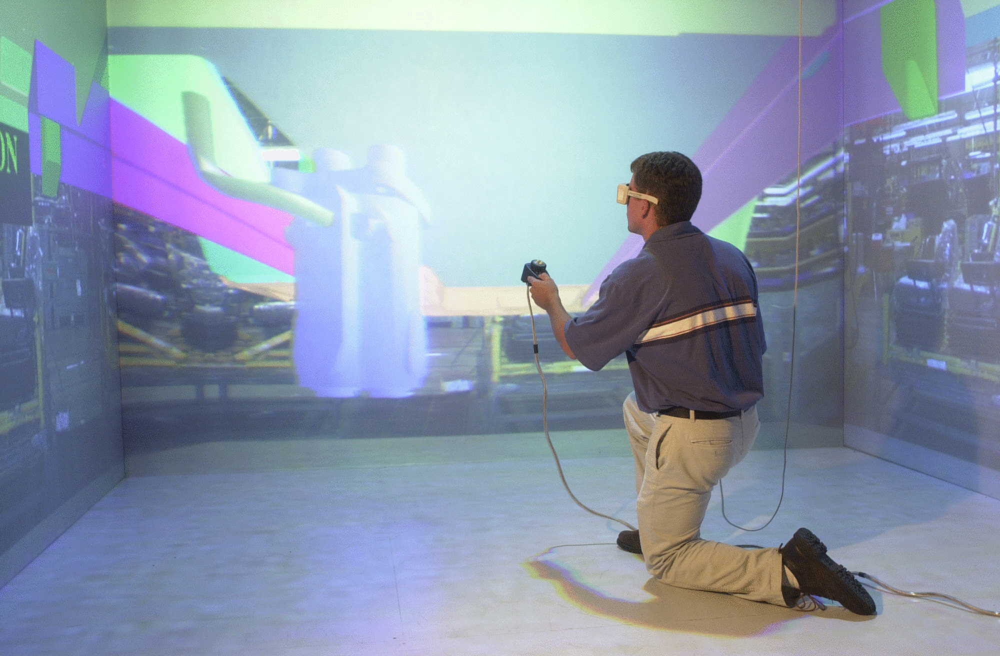

Overview
VEGAS (a Virtual Environment for General ASsembly), provides engineers with a tool to investigate assembly feasibility. The application works with model data derived from popular CAD software packages like Pro/Engineer. The advantage of VEGAS is its flexibility to populate a virtual environment with various models, with minimal limitations on size, shape or complexity, without having to recompile a specific assembly situation. Assuming the parametric data from the CAD packages can be read into a tessellation routine, and turned into triangles, essentially any model can be recognized by VEGAS. Once in the virtual environment the engineers can interact with their models to perform assembly tasks as they would in the physical world. By allowing the assembly planning to occur with digital models as opposed to physical mock-up the engineers can save time and money by trying many different options relatively easily. As the assembly methods are being analyzed, collision detection algorithms are used to tell the user if the parts fit together or if there are some undesirable interferences taking place.
Software and Hardware
Additional Media
Publications
Personnel
Funding
Facilities
Mechanical Engineering | VRAC | ISU | Home | E-mail | Previous